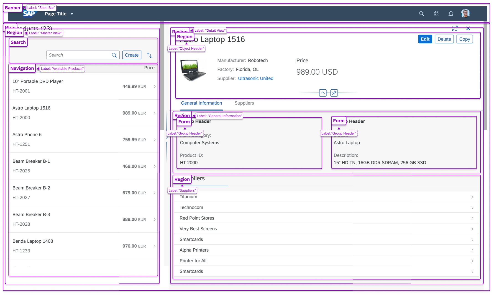

Landmark roles (or "landmarks") identify sections of a page. Landmarks help assistive technology users to orient themselves in a page and help them navigate easily to various sections within a page. Landmarks also provide an easy way for assistive technology users to skip over blocks of content that are repeated on multiple pages and inform them of the structure of a page. For instance, if there is a common navigation menu found on every page, landmarks can be used to skip over it and navigate from one section to another.
Support for landmark roles is provided for:
sap.f.DynamicPage
sap.m.Pagesap.m.Panelsap.uxap.ObjectPagesap.f.FlexibleColumnLayoutBefore seeing how a landmark is set for these controls, you must understand which landmark roles we can use.
The picture below is an example of different landmarks with assigned labels in a
sap.uxap.ObjectPageLayout. 
Supported landmark roles in SAPUI5 are stored in the sap.ui.core.AccessibleLandmarkRole enum. For more
information, see the API Reference:
sap.ui.core.AccessibleLandmarkRole.
Here is a list of all of the values of the enum showing the part of the web page for which each of them is appropriate:
sap.ui.core.AccessibleLandmarkRole:
sap.ui.core.AccessibleLandmarkRole.Banner: Represents
the ARIA banner role.
A region that contains the prime heading or internal title of a page.
sap.ui.core.AccessibleLandmarkRole.Complementary:
Represents the ARIA complementary role.
Any section of the document that supports the main content, yet is separate and meaningful on its own.
sap.ui.core.AccessibleLandmarkRole.ContentInfo: Represents
the ARIA complementary role.A region that contains information about the parent document such as copyrights and links to privacy statements.
sap.ui.core.AccessibleLandmarkRole.Form: Represents the
ARIA form role.A region of the document that represents a collection of form-associated elements, some of which can represent editable values that can be submitted to a server for processing.
sap.ui.core.AccessibleLandmarkRole.Main: Represents the ARIA main role.The main content
in a document. In almost all cases, a page will have only one
role="main".
sap.ui.core.AccessibleLandmarkRole.Navigation: Represents
the ARIA navigation role.A collection of links suitable for use when navigating the document or related documents.
sap.ui.core.AccessibleLandmarkRole.Region: Represents the
ARIA region role.A collection of links suitable for use when navigating the document or related documents.
sap.ui.core.AccessibleLandmarkRole.Search: Represents the
ARIA search role.The search tool of a web document.
sap.ui.core.AccessibleLandmarkRole.None: No explicit role is
applicable.The interpretation of this value depends on the control/element that defines a property with this type. Normally this value means that no accessible landmark should be written.